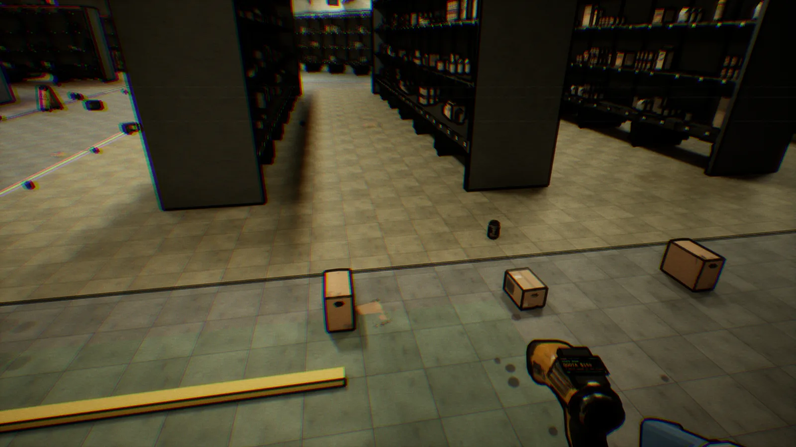

Presse-Kit
Alles, was du brauchst, um über Night Stocktake zu schreiben, es zu streamen oder zu covern. Alle Assets dürfen frei in Berichten und Videos verwendet werden.
Die Fakten
MARKT #0412
Bis zu vier Nachtschichtler zählen den Bestand eines Hypermarkts, der sich umräumt, sobald keiner hinsieht. Scannen, tragen, das Soll abliefern - und um sechs raus.

Über das Spiel
Night Stocktake ist ein Koop-Horrorspiel über die schlimmste Nachtschicht im Einzelhandel. Stempel mit bis zu drei Freunden ein, schnapp dir einen Scanner und einen Wagen und zähle alles in einem Hypermarkt, der nicht stillhält: Licht flackert, Regale räumen sich um, Abteilungen tauschen die Plätze, sobald keiner hinsieht. Deine Tablet-Karte ist eine Momentaufnahme, die schnell veraltet.
Sechs Dinge arbeiten mit dir in der Nacht - Schaufensterpuppen, die sich nur unbeobachtet bewegen, ein Buch, das beißt, ein Kunde, in dessen Nähe du nicht scannen darfst, ein Stapler, der nie bremst, eine Kassiererin, die jeden scannt, der in ihrer Spur steht, und ein Wachmann, der Ausweise kontrolliert. Erfülle das Soll, stempel um sechs aus und gib deinen Lohn für Kundenkarten, Sticker, Köpfe, Hüte und Scanner-Skins aus.
Hauptfeatures
- Online-Koop-Nachtschichten für 1-4 Spieler
- Ein Markt, der sich unbeobachtet umräumt
- Physik: wackelige Wagen, fallende Ware, Kühlschränke für zwei
- Sechs Gefahren, die nach Geräuschen jagen, jede auf ihre Art
- 85 Erfolgs-Sticker für deinen Ausweis und deinen Kartonkopf
- Kartonkopf-Anpassung: Köpfe, Hüte, Schuhe, Gesichter, Scanner-Skins, Spinde
Streamen. Monetarisieren.
- Du darfst Videos von Night Stocktake auf YouTube, Twitch, TikTok, Kick und jeder anderen Plattform streamen, aufnehmen und veröffentlichen.
- Du darfst diese Videos und Streams monetarisieren (Werbung, Abos, Sponsoring, Partnerprogramme). Keine Erlaubnis oder schriftliche Lizenz nötig.
- Musik und Soundeffekte des Spiels sind nicht bei Content ID registriert. Falls du jemals einen Claim auf Night-Stocktake-Material bekommst, sag uns Bescheid, und wir helfen, ihn aufzuheben.
- Du darfst die Logos, Key Art und Screenshots von dieser Seite in Thumbnails und Berichten verwenden.
- Bitte erwecke nicht den Eindruck, dass deine Inhalte von StaleMilk Games erstellt, gesponsert oder unterstützt werden, sofern das nicht der Fall ist.
- Ein Link zum Spiel in deiner Beschreibung freut uns, ist aber keine Pflicht.
Wir können diese Richtlinie ändern; es gilt die Version auf dieser Seite.

Logos, Key Art, Screenshots
Zum Vergrößern anklicken. Alles (als PNG) steckt in presskit.zip.
 Key Art
Key Art Key Art, ohne Logo
Key Art, ohne Logo Social Card 1200×630
Social Card 1200×630




 Schaufensterpuppe
Schaufensterpuppe Buch
Buch Kunde
Kunde Stapler
Stapler Kassiererin
Kassiererin Wachmann
Wachmann